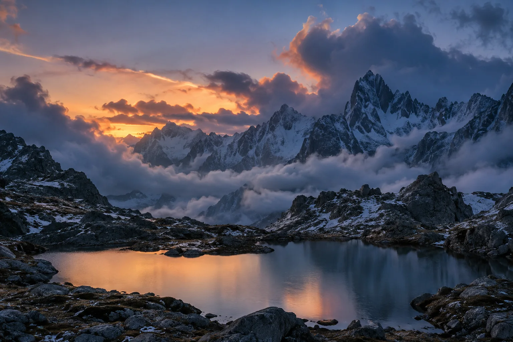
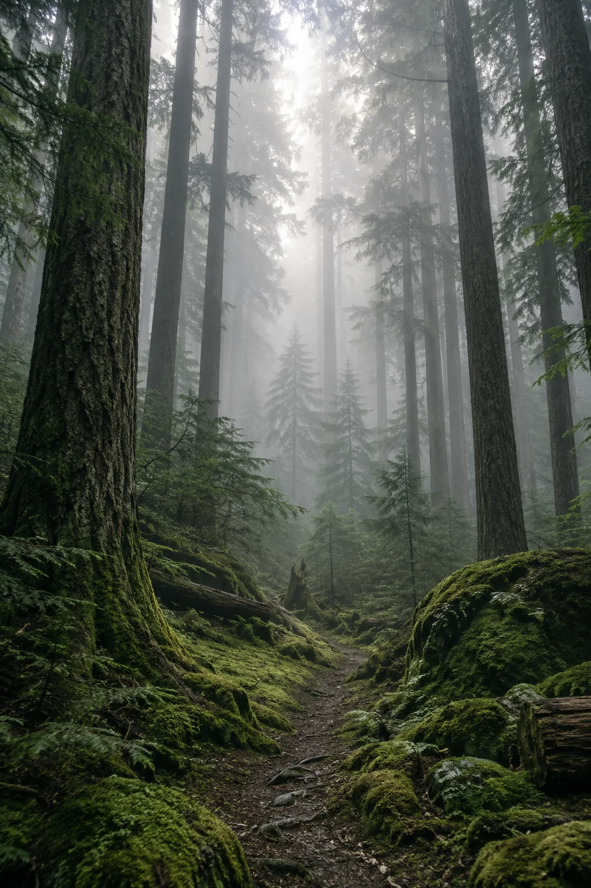

04 / RÉSONANCES
Ce qui nous relie.
Prolonger le regard
Il y a une histoire
derrière chaque image.

Les voyagesSuivre le chemin ↗
Les carnetsPrendre le temps ↗04 / RÉSONANCES
Prolonger le regard

Les voyagesSuivre le chemin ↗
Les carnetsPrendre le temps ↗